20250529素養導向程式設計:教學與評量-以Python為例
Table of Contents

1. 研習內容
- 國中科技領域召集人課程領導增能研習
- 研習對象及人數:本市公私立國中教師，預估 25 人
- 研習時間:114 年 05 月 29 日（星期四）9:00-12:30
- 研習地點:輔導團 305 會議室
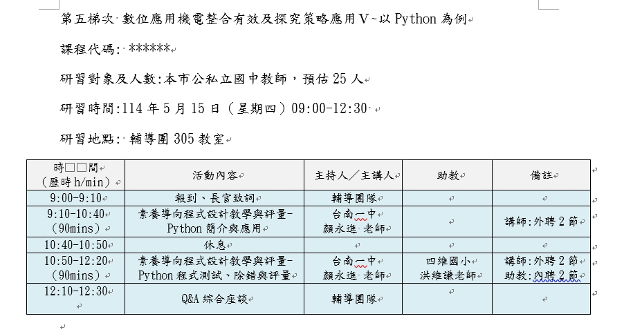
Figure 1: 202405 素養導向程式設計教學與評量-Python 為例
1.1. 課程規劃
| 時間 | 活動 |
|---|---|
| 09:00 ~ 09:10 | 報到 |
| 09:10 ~ 10:40 (90 mins) | Python簡介與應用，Python程式測試、除錯 |
| 10:40 ~ 10:50 | 休息 |
| 10:50 ~ 12:20 (90 mins) | AI輔助Python作業、測驗的開發，Python的自動化評量 |
| 12:10 ~ 12:30 | Q&A |
2. 程式語言教學考量方向
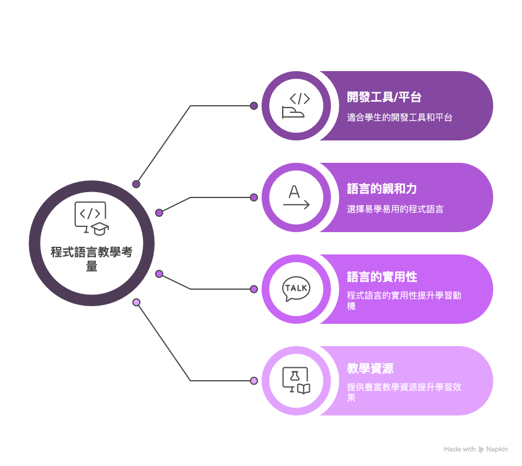
Figure 2: 程式語言選擇考量
3. Why Python
3.1. 開發工具與平台支援
Python 擁有豐富的開發工具和平台，支援跨平台開發，並提供多種教學資源：
3.1.1. 單機
- Jupyter Notebook：結合文字、程式碼與圖表，適合教學與資料分析。
- PyCharm Edu：專為教育設計的開發環境，內建教學課程。
- Codesters：結合教學管理與互動式 Python 編程平台，適合中小學教學。
- Jupyter notebook
3.1.2. Online
- Google Colab：雲端筆記本，免安裝，方便學生隨時練習。
- Programiz
- ONLINE PYTHON
- OnlineGDB
3.2. 受歡迎程度: TOIBE index
TIOBE指數（TIOBE programming community index）是一種衡量程式語言流行度的標準，該指數是根據網絡搜尋引擎對含有該語言名稱的查詢結果的數量計算出來的1。該指數涵蓋了網民在Google、Google Blogger、MSN 、雅虎、百度、維基百科和YouTube的搜索結果。該指數於2001年推出，每月更新一次。用戶可以免費查詢信息，但如果需要長期的統計數據則要付費購買。該指數的作者表示，在人們做出各種戰略決策時，該指數可能是有價值的。TIOBE主要關注於圖靈完備性語言2，所以它不提供例如HTML的受歡迎程度信息3。
Python由2019年的第三名
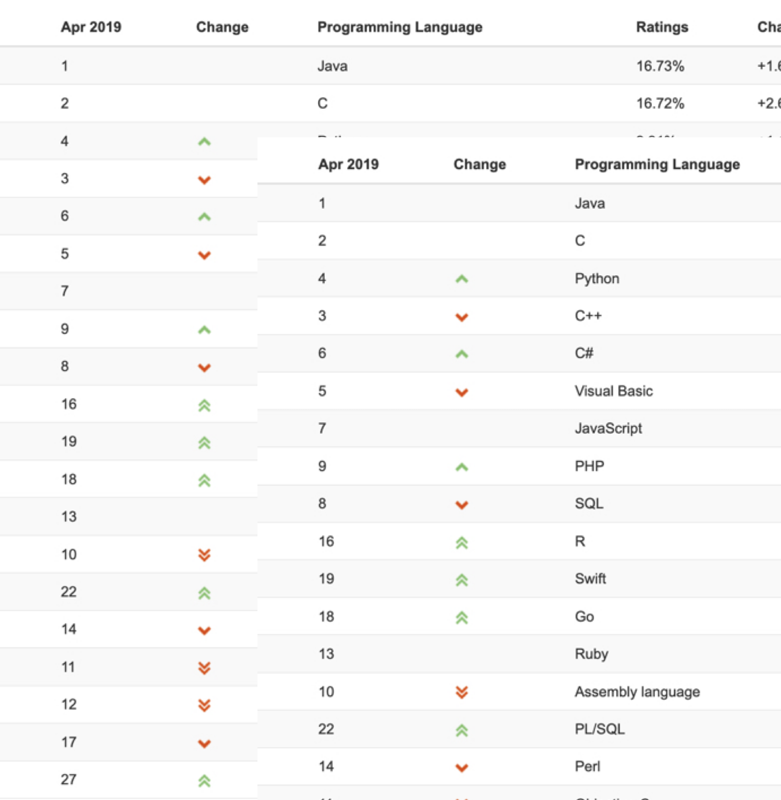
Figure 3: 2019年Python排名第三
到2025年已躍居榜首，2,3,4名的分別為C++, C, Java
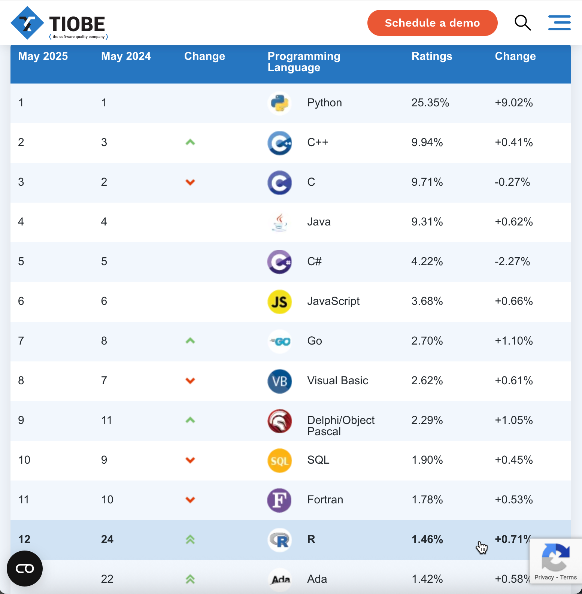
Figure 4: 2025年Python排名第一
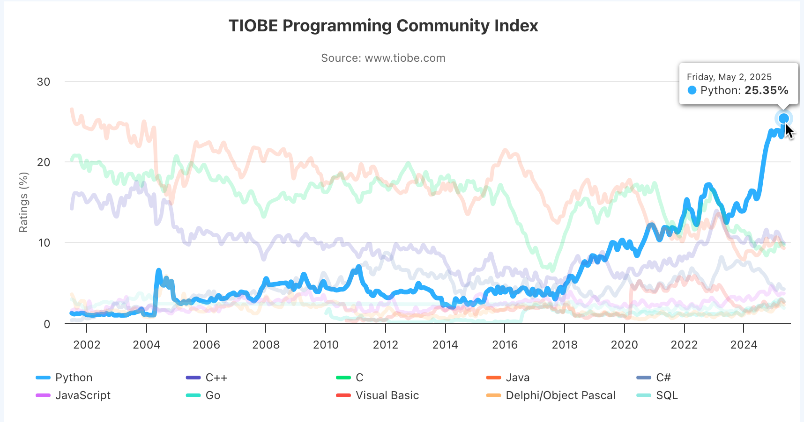
Figure 5: Python: 2002-2025年Python的TOIBE index變化
3.3. 未來趨勢
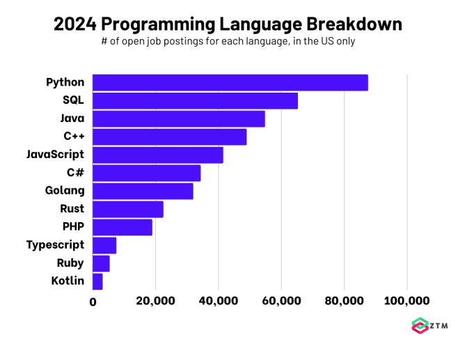
Figure 6: 工作機會
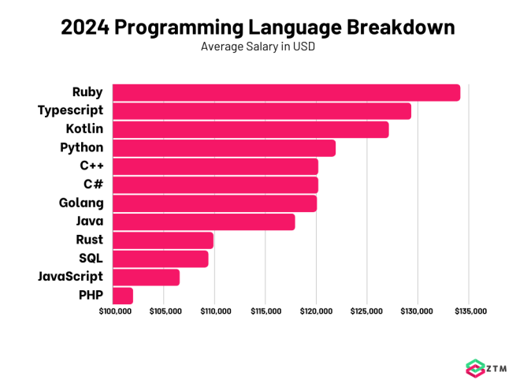
Figure 7: 平均薪資
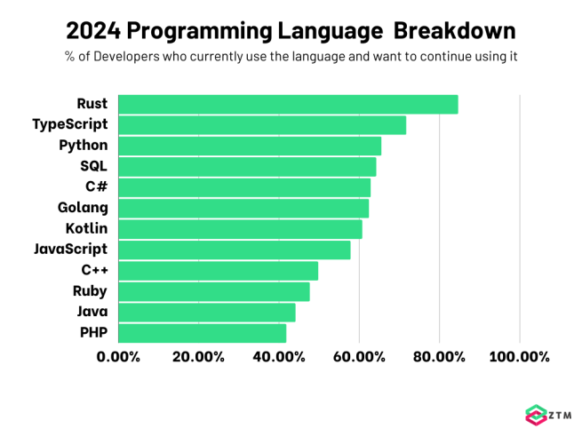
Figure 8: 需求/喜愛
選擇 Python 作為程式設計教學語言，具有多方面的優勢，特別適合初學者、資料處理與 AI 應用，以及希望簡化教學流程的教師。以下從五個面向說明其適用性：
3.4. 適合初學者
Python 的語法簡潔、接近自然語言，降低了學習門檻：
- 簡潔易懂的語法，不需要繁瑣的記憶和掌握。
- 豐富的內建庫和第三方庫，提供了大量方便的功能和工具。
- Interpreter v.s. Compiler
- 易於初學者除錯
- 可分段執行(Colab)
- 易於初學者除錯
3.5. 適合資料處理與 AI 應用
Python 擁有強大的資料處理與 AI 庫，廣泛應用於各種領域：
- Pandas、NumPy：資料操作與分析的基礎工具。
- Scikit-learn、TensorFlow、Keras：機器學習與深度學習框架。
- 廣泛應用於金融、醫療、教育等領域的資料分析與 AI 模型開發。
3.6. 適合解決生活中的問題
- Python 是一門容易上手的程式語言，具有強大的應用範疇，包括網頁開發、資料分析、人工智慧等，教導學生 Python 可以培養其解決問題和創造力的能力。
- Python 在業界和學術界都廣泛使用，學會 Python 能夠為學生未來的學術和職業生涯打下良好基礎。
- 開發互動式教學應用，提升學生參與度。
- 利用 AI 工具輔助教學，如自動批改作業、生成教學內容等。
3.7. 適合偷懶的老師
- 不一定要買課本, 線上免費教材豐富, 例如Python: From Zero to Error
- 線上教學投影片
- 線上免費試題
- 免費online judge:
3.8. Python應用領域
Python 在應用領域上有許多特色，與其他程式語言相比，它的主要特點包括：
- 網頁開發：Python 在網頁開發領域具有廣泛的應用，例如使用 Django、Flask 等框架可以快速開發強大的網站和網路應用程式。
- 資料科學與人工智慧：Python 成為了資料科學和人工智慧領域的首選語言，擁有豐富的科學計算庫（如 NumPy、Pandas、SciPy）、機器學習庫（如 TensorFlow、PyTorch、scikit-learn）以及可視化工具（如 Matplotlib、Seaborn）等，這些庫使得數據處理、機器學習和人工智慧開發變得更加容易和高效。
- 自動化與腳本：Python 是一個優秀的自動化和腳本語言，能夠幫助使用者快速編寫各種自動化腳本，從系統管理到檔案處理都能輕鬆應對。
- 桌面應用程式：雖然不如其他語言像是 C# 或 Java 那樣主要用於桌面應用程式開發，但 Python 也有一些框架（如 Tkinter、PyQt、wxPython）可用於開發桌面應用程式。
- 科學計算：Python 在科學計算領域中廣泛應用，因為它易於學習和使用，並且具有豐富的科學計算庫，使得數值計算、統計分析、數據可視化等工作變得更加容易。
4. Python程式設計平台比較
4.1. 類型
4.1.2. Online Python IDE
4.2. 優缺點
以下的優缺點係以學生/教師的教/學為出發點進行分析。
4.2.1. Google Colab
- 簡介
- 優點
- 使用方便簡單，學生只要有Gmail帳號即可使用，介面易學易用，容易上手
- 學生所寫程式可儲存於Google雲端硬碟，方便日後回顧
- 具備基本的除錯環境: 程式可分段逐步執行
- 方便教師撰寫教學重點，結合教材與練習空間
- 可結合作業，要求學生詳述程式運作原理，並輸出執行結果
- 可結合Google Classroom進行作業發派與評分: 較方便，教師可事先提供副本
已預設安裝多數常用套件(如numpy, pandas, matplotlib, seaborn, beautifulsoup4, tensorflow, scikit-learn, scipy…)，使用者無需再自行下載安裝: 可於colab執行下列指令查看已安裝的套件列表
1: !pip list
- 完善的資料視覺化(Data Visualization)功能
- 整合Google Drive: 可存取使用者Google Drive上的檔案
- 提供免費的計算資源: GPU, TPU
- 提供協作功能: 多個使用者可共編一個colab notebook，適合團隊project開發
- 使用方便簡單，學生只要有Gmail帳號即可使用，介面易學易用，容易上手
- 缺點
- 須提供網路環境: 不適用線上測驗
- 缺乏Judge功能: 教師需以人工評分作業，耗費人力
- 存取檔案較麻煩
- 執行時間受限: 連續運作時限為12小時
- 缺乏進階的除錯功能
- 須提供網路環境: 不適用線上測驗
- TODO 使用教學
4.2.2. Jupyter Notebook
- 簡介
- Jupyter這個名字主要是由Julia、Python及R所構成，當然除了Julia、的Python及R之外，還有提供許多的kernels(例如Java、C#、Go、Ruby、JavaScript等超過50多種Jupyter kernels)。
Jupyter是由Notebook Frontend、 Jupyter Server及Kernel Protocol這三部分所建立6
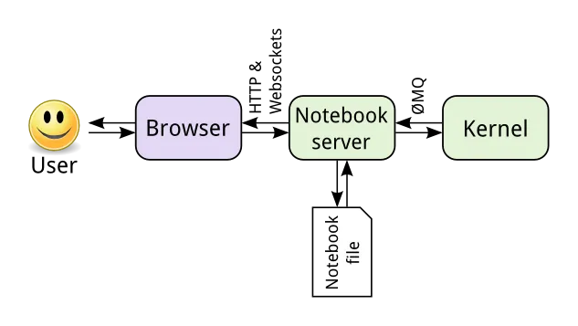
Figure 9: Jupyter notebook架構
- Jupyter Notebook您可以把它想像成是上述所講的IPython + Notebook整合架構，它是一個介於編輯器(例如Atom)及IDE(Spider、PyCharm、Vim) 之間的應用環境，可讓您編寫程式時利用其直譯式的特性，達到高互動執行結果，並且很容易呈現資料視覺化的執行。Jupyter Notebook包含了兩個組成： Web Application和Notebook Documents。
- 網頁應用(Web Application)：基於瀏覽器(web-based)的互動創作及應用工具，包括可以計算、數學、文檔創作及豐富的多媒體輸出。
- 文檔顯示(Notebook Documents)：顯示所有在上述Web Application當中的內容，包括計算的輸入/輸出、文件說明/解釋、數學運算及式子、圖片及所有豐富多媒體內容。
- Jupyter Notebook介紹及安裝說明
- 網頁應用(Web Application)：基於瀏覽器(web-based)的互動創作及應用工具，包括可以計算、數學、文檔創作及豐富的多媒體輸出。
- Jupyter這個名字主要是由Julia、Python及R所構成，當然除了Julia、的Python及R之外，還有提供許多的kernels(例如Java、C#、Go、Ruby、JavaScript等超過50多種Jupyter kernels)。
- 優點
- 可於單機環境運作，無需網路環境: 方便學生自行練習
- 具備基本的除錯環境: 程式可分段逐步執行
- 方便教師撰寫教學重點，結合教材與練習空間
- 可結合作業，要求學生詳述程式運作原理，並輸出執行結果
- 方便程式存取本機資料檔
- 可用於考試情境: 校內架設Judge Server
- 可於單機環境運作，無需網路環境: 方便學生自行練習
- 缺點
- 運算速度受限本機資源(CPU、GPU)
- 所有套件均需自行安裝，自行管理套件版本
- 不適合團體協作開發
- 程式檔儲存於本機
- 運算速度受限本機資源(CPU、GPU)
- 安裝
- 使用Anaconda安裝
官方強烈建議使用Anaconda Distribution來進行安裝，因為Jupyter Notebook、常用的科學計算(Scientific Computing)及資料科學(Data Science)所需packages都已經包含在裡面，對於未來想進行Data Science的應用學習有很大的方便性6。
- 使用pip安裝
As an existing Python user, you may wish to install Jupyter using Python’s package manager, pip, instead of Anaconda. First, ensure that you have the latest pip; older versions may have trouble with some dependencies:
pip3 install --upgrade pip
Then install the Jupyter Notebook using:
pip3 install jupyter
- 使用Anaconda安裝
- 使用
1: jupyter notebook
4.2.3. PyCharm
- 簡介
- Professional Edition v.s. Community Edition7
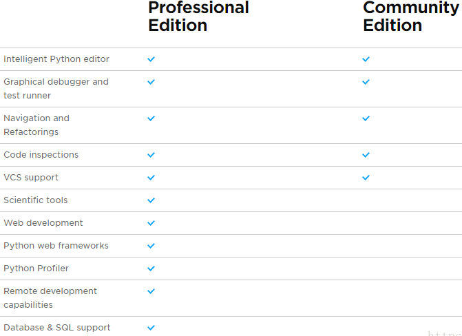
Figure 14: 專業版與社區版的差異
- 功能上的區別：
- PyCharm專業版是功能最豐富的，與社區版相比，PyCharm 專業版增加了Web開發、Python We框架、Python分析器、遠端開發、支援資料庫與SQL等更多高級功能。
- PyCharm的社區版中沒有Web開發、Python We框架、Python分析器、遠端開發、支援資料庫與SQL等這些功能。
- PyCharm教育版的功能雖然比專業版會少一些，但與社區版相比，更加支援學校的教學工作。
- PyCharm專業版是功能最豐富的，與社區版相比，PyCharm 專業版增加了Web開發、Python We框架、Python分析器、遠端開發、支援資料庫與SQL等更多高級功能。
- 授權方式不同
- PyCharm的專業版是需要付費購買該軟體的啟動碼才可以進行使用。
- PyCharm的社區版提供給開發者免費使用的。
- PyCharm的教育版只針對師生認證的使用者才免費使用。
- PyCharm的專業版是需要付費購買該軟體的啟動碼才可以進行使用。
- 適用人群不同
- PyCharm的專業版是適用於一些公司進行專業網際網路開發適用，這需要使用公司投入一定資金。
- PyCharm的社區版是提供給程式設計愛好者使用學術交流的，所以是免費提供的，其功能雖然不夠全面，但能夠滿足日常開發需要。
- PyCharm的教育版則是以公益為目的免費提供給各大學校進行程式設計教學，發展程式設計教育事業。
- PyCharm的專業版是適用於一些公司進行專業網際網路開發適用，這需要使用公司投入一定資金。
- 功能上的區別：
- Professional Edition v.s. Community Edition7
- 優點
- 除錯、追踪功能完善
- 可於單機環境運作，無需網路環境: 方便學生自行練習
- 方便程式存取本機資料檔
- 可用於考試情境: 校內架設Judge Server
- 可搭配Github進行團隊協作
- 除錯、追踪功能完善
- 缺點
- 需安裝軟體: 電腦教室需事先安裝，學生帳戶無安裝權限
- 程式檔儲存於本機: 學生要自行複製儲存到隨身碟或雲端硬碟
- 需安裝軟體: 電腦教室需事先安裝，學生帳戶無安裝權限
- TODO DEMO
5. 程式設計教學的工作類型
資訊科教師在教「程式設計」時，可將教學工作大致分為以下幾類:
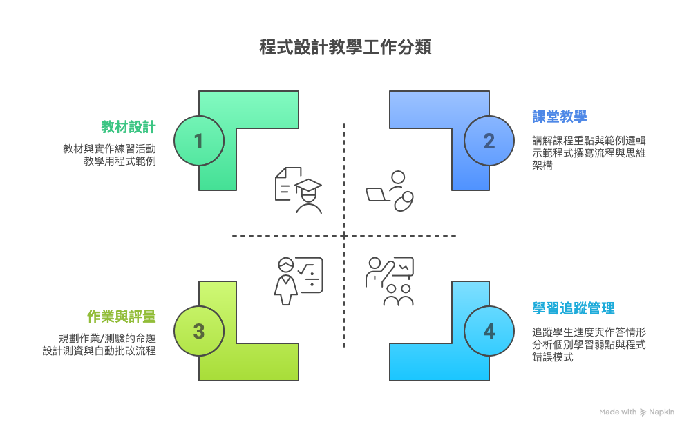
Figure 15: 程式設計教學
Figure 16: 程式設計教學
5.1. 教材設計
- 撰寫自學講義與實作練習活動
- 製作教學用程式範例與解說素材
5.2. 課堂教學
- 講解課程重點與範例邏輯
- 示範程式撰寫流程與思維架構
- 引導學生進行除錯與問題分析
5.3. 作業與評量
- 設計題型：選擇題、填空題、程式題
- 規劃作業/測驗的命題
- 設計測資與自動批改流程
- 建立評分標準與程式風格檢查機制
5.4. 學習追蹤管理
- 追蹤學生進度與作答情形
- 分析個別學習弱點與程式錯誤模式
- 規劃課後補救教學與差異化指導
6. AI輔助作業/測驗設計
6.1. 題目生成
6.1.1. ChatGPT
Prompt:
你是一個設計用來幫助教師生成Python程式設計試題的 AI 助理，教師會提供完成該試題所需用到的Python語法以及試題難度，請依這些需求生成一個「背景符合學生生活經驗的試題」，並附上三筆測資與正確程式。
6.1.2. ChatGPTs
6.2. 作業發佈/繳交
- Moodle
Google Classroom + Colab
Figure 17: 以Google Classroom發佈Colab程式作業
6.3. 作業發佈與繳交: 以Google Classroom + Google Colab為例
6.3.1. 互動式教學
以Google Classroom + Google Colab為例，示範如何在Google Classroom平台提供互動式教材
6.3.2. 作業繳交
以Google Classroom + Google Colab為例，示範如何在Google Classroom平台發派程式作業
- 教師端
新增colab的教學notebook
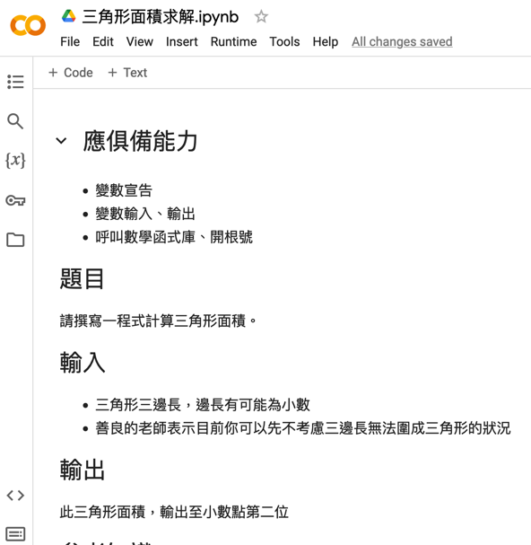
Figure 21: 設計作業編寫notebook互動教材
- 複製連結、分享至Google Classroom
於classroom中新增作業
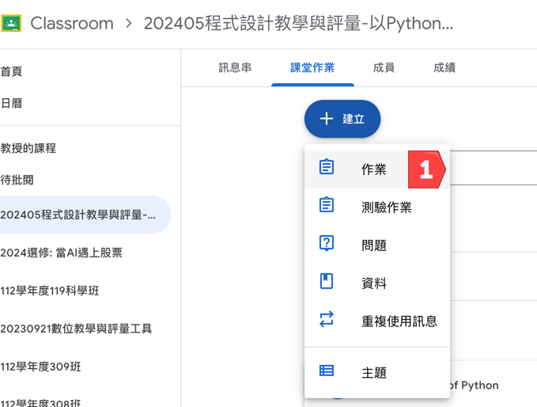
Figure 22: 建立作業
自雲端硬碟中挑選編好的notebook、選擇“為每位學生建立副本”
Figure 23: 加入作業說明、附加notebook互動教材
- 學生端DEMO
- 教師評分
查看作業繳交狀況
學生上傳作業後，教師端就會看到作業的繳交狀況
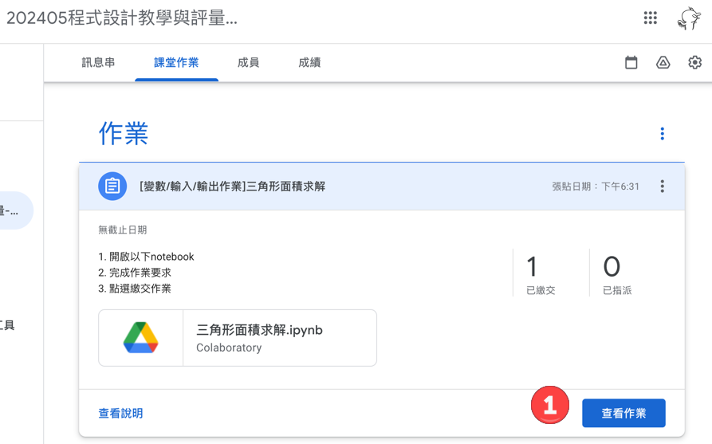
Figure 29: 作業繳交情形
評分、提供註解、發還作業
教師逐一為作業評分、加入註解，完成後點選發還，學生就能收到作業
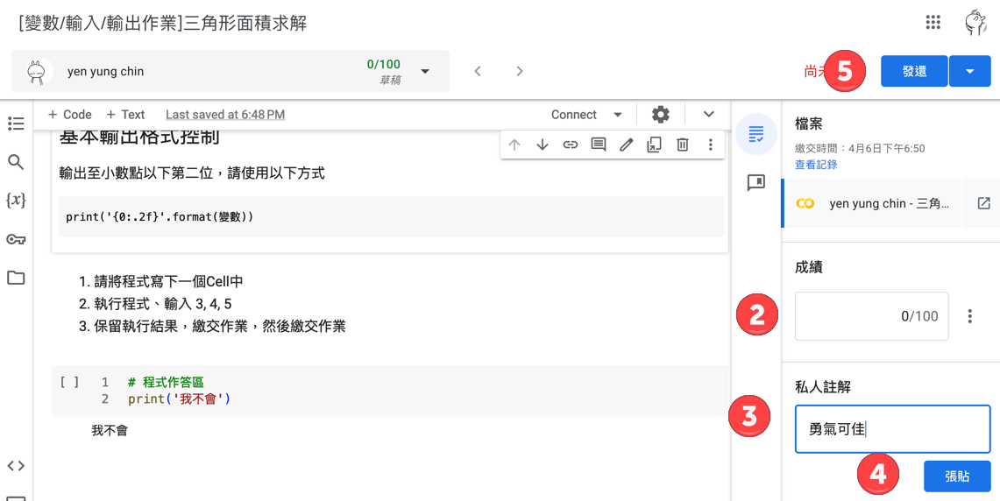
Figure 30: 評分、註解
確認發還
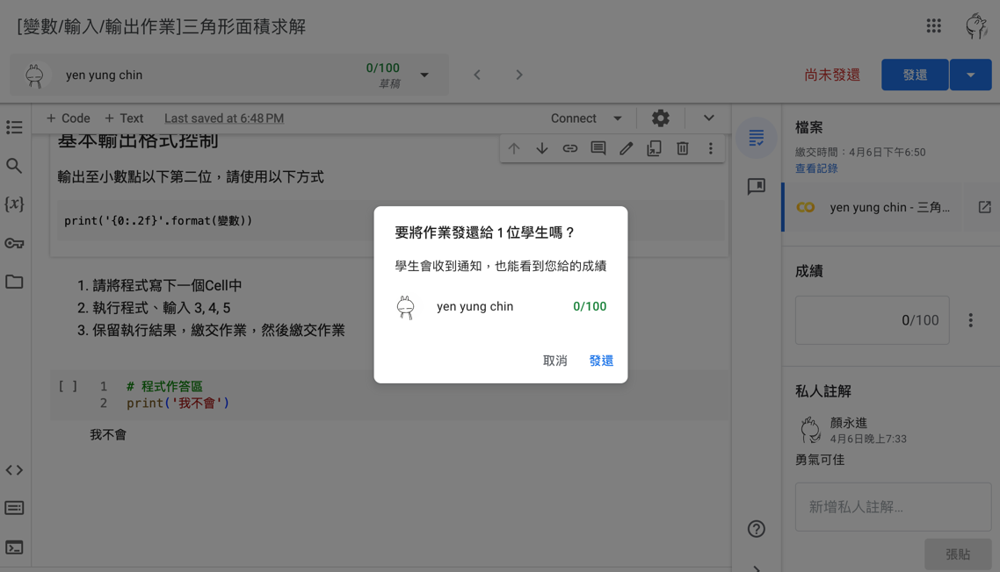
Figure 31: 再次確認發還
- 學生端收到批閱後的作業
教師發還作業後，學生端就能看到評分與註解
至於是否允許重新繳交則視教師的作業設定而有所不同
Figure 32: 學生查看收到的作業
7. AI輔助作業/測驗除錯
7.1. Google Colab + AI程式說明/問答
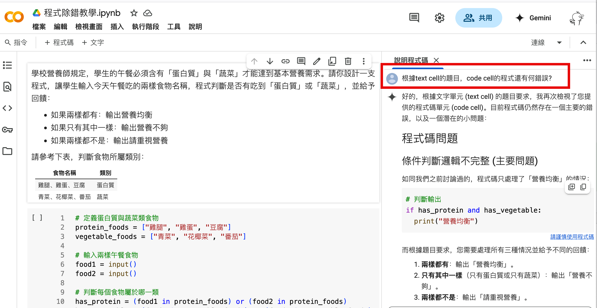
Figure 33: Google Colab + AI程式說明/問答
7.2. GPTs
Figure 34: Caption
8. 作業/測驗-線上評分系統
8.1. Online Judge系統
8.1.1. 簡介
體驗完上述的手動評分，看著改不完的作業，是否感受到身為資訊科教師的悲痛…，此時就是線上評測系統出場的時機了。Online Judge有許多不同的類型和平台，包括練習題、競賽題、以及專業題目等等。許多大學和專業程式設計比賽都使用Online Judge作為平台。
Online Judge（線上評測系統）是一個可以替代教師為學生送出的程式自動評分的平台，一般用於提供練習程式設計與舉辦程式設計競賽。它提供了一個虛擬的環境，讓學生能夠提交自己寫的程式碼，然後自動執行學生送出的程式碼，對程式碼進行測試，最後給出評測結果。這些評測結果通常是學生的程式碼在不同測試案例(case)下的執行結果，例如程式碼是否能夠正確地解決問題，是否能夠在給定的時間內完成任務，以及是否能夠在給定的記憶體限制下運行。
線上評測系統（以下稱 Online Judge 或簡稱 OJ）一詞在 2001 首次被提出，意指在部份程式競賽中使用的一種線上的、全自動化的，可以檢驗參賽者所提交的程式碼/執行檔/文字檔正確性的系統。儘管詞源在 2001 年才出現， OJ 系統本身的存在歷史其實更為悠久，最早可以追溯到 1961 年，在 Stanford University 中開始被使用。1970 年，在 Texas A&M University 所舉辦的第一屆 ICPC 程式競賽中，線上評測系統被用來自動驗證參賽者提交的程式碼是否執行出正確答案，以及是否有使用超過限制的計算資源，並根據評估對參賽者進行 realtime 的排名。後來，IOI 參考了 ICPC 的作法，也使用了 OJ 進行評分，但是採用了不同的計分規則8。
目前幾個知名的線上評測系統包括:
- UVa Online Judge
- LeetCode
- https://oj.openedu.tw/
- 高中生程式解題系統
- https://tioj.ck.tp.edu.tw/
- Sky online judge
- moodle + VPL
雖然這些線上評測系統有些可以讓學生自行註冊帳號免費使用，但是基於下列幾項原因，這些系統並不十分適用於學校環境:
- 教師通常不具備管理權限：即管理試題、查看學生作答情形
- 這些系統都在校外，不適用於校內考試
基於以上原因，在校內自行架設一個免費的評測系統看起來是個不錯的主意。目前免費的開源線上評測系統有以下幾個：
DMOJ: 這一套功能看起來最豐富最完整，而且支援的語言最多，可以到 60 幾種！而且還支援 Google, Facebook, Github 這些第三方登入。後端是 Python 寫的，而且一直持續有在維護，文件也滿完整的9。
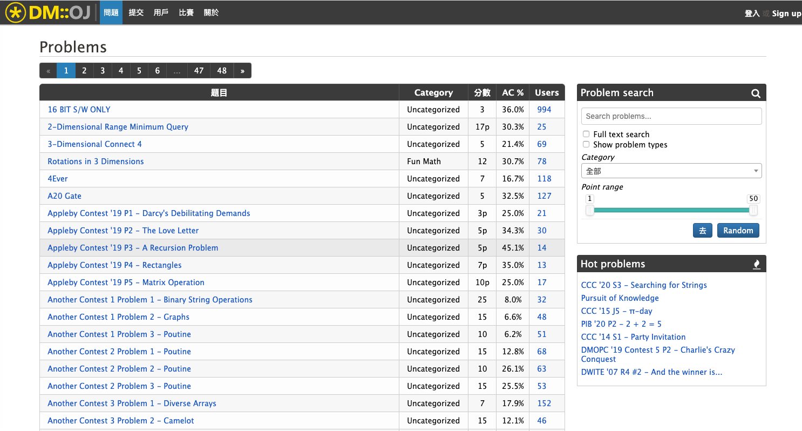
Figure 35: DMOJ
NOJ: 中國南京郵電大學開源出來的系統，是用 Laravel 寫成的。介面使用 Material UI，看起來比較現代，但是文件比較不完整9。
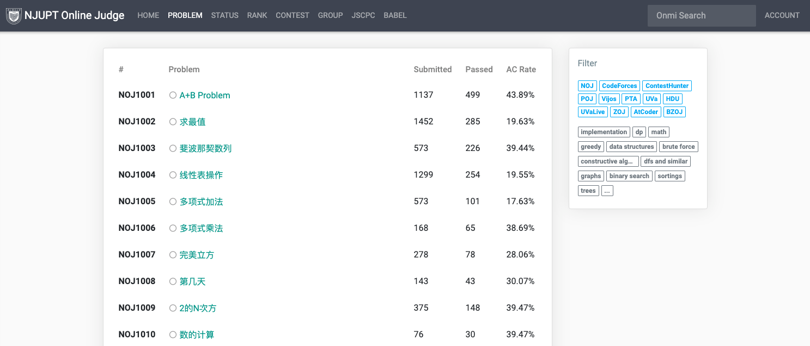
Figure 36: NOJ
QDOJ: 中國青島大學開源出來的，後端是 Python + Django，前端是 Vue，採用 docker 部署簡單快速，支援的程式語言有：C, C++, Java 跟 Python。介面的部分則是使用 Ant Design9。
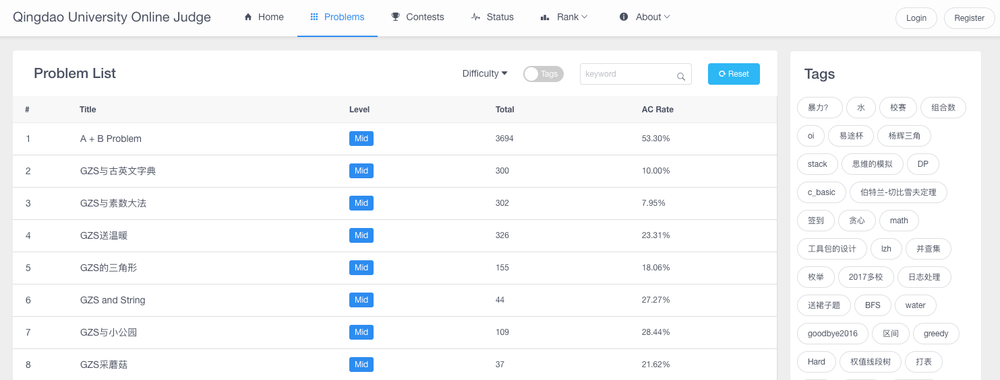
Figure 37: QDOJ
由於QDOJ支援docker部署，安裝容易，以下我們就拿這套系統讓教師們體驗一下線上評測系統的方便與樂趣。
8.1.2. 運作原理
典型的線上評測系統運作原理如圖38所示，大致流程如下：
- 學生透過線上評測網頁(網站伺服器)將寫好的程式碼送出評分
- 評測系統網站收到程式碼後，將程式碼儲存於資料庫中
- 評測系統要求評分伺服器為該名學生評分
- 評份伺服器由資料庫中取得程式碼、評分案例(case)、正確答案，然後交由評分機器人執行評分
- 評分機器人評分後回報給評分伺服器
- 評分伺服器將評分結果回存到資料庫
- 評測網站顯示評分結果回報給學生
上述流程看似簡單，但是「讓一台電腦(評分伺服器)執行一堆來歷不明的程式」這件事本身就是極端危險的(這也是病毒與駭客在做的事)，所以通常評測系統都會模擬出一個虛擬的環境(沙箱, sandbox)來執行這些要評分的程式，避免系統本身受到危害。
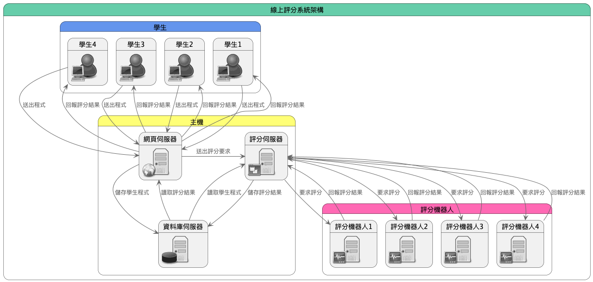
Figure 38: 線上評分系統架構
8.2. 學生端
以QindaU Online Judge Server為例，示範學生如何進行線上評量
8.2.1. 測試用評測系統
8.2.2. 學生帳號
| Username | Password |
|---|---|
| st10 | tnfsh10 |
| st11 | tnfsh11 |
| st12 | tnfsh12 |
| st13 | tnfsh13 |
| st14 | tnfsh14 |
| st15 | tnfsh15 |
| st16 | tnfsh16 |
| st17 | tnfsh17 |
| st18 | tnfsh18 |
| st19 | tnfsh19 |
| st20 | tnfsh20 |
| st21 | tnfsh21 |
| st22 | tnfsh22 |
| st23 | tnfsh23 |
| st24 | tnfsh24 |
| st25 | tnfsh25 |
| st26 | tnfsh26 |
| st27 | tnfsh27 |
| st28 | tnfsh28 |
| st29 | tnfsh29 |
| st30 | tnfsh30 |
8.2.3. 答題
8.2.4. 撰寫程式
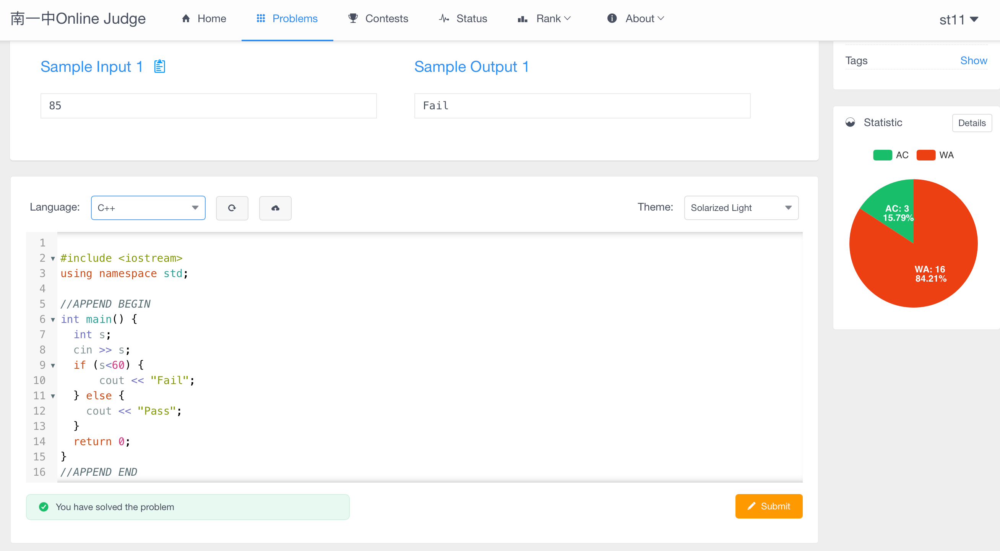
Figure 42: 繳交作業/測驗
8.3. 教師端
以QindaU Online Judge Server為例，示範教師如何出題
8.3.1. 教師帳號
| Username | Password |
|---|---|
| ta10 | tnfsh10 |
| ta11 | tnfsh11 |
| ta12 | tnfsh12 |
| ta13 | tnfsh13 |
| ta14 | tnfsh14 |
| ta15 | tnfsh15 |
| ta16 | tnfsh16 |
| ta17 | tnfsh17 |
| ta18 | tnfsh18 |
| ta19 | tnfsh19 |
| ta20 | tnfsh20 |
| ta21 | tnfsh21 |
| ta22 | tnfsh22 |
| ta23 | tnfsh23 |
| ta24 | tnfsh24 |
| ta25 | tnfsh25 |
| ta26 | tnfsh26 |
| ta27 | tnfsh27 |
| ta28 | tnfsh28 |
| ta29 | tnfsh29 |
| ta30 | tnfsh30 |
8.3.2. 編寫題目
- 1. 以管理者身份登入系統
- 2. 點選Problem List
點選“+Create”按鈕
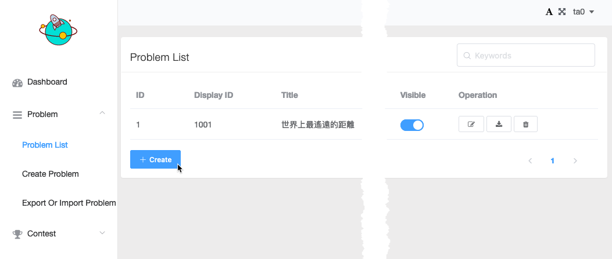
Figure 43: 新增試題
- 3. 編輯試題
8.3.3. 查看學生作答
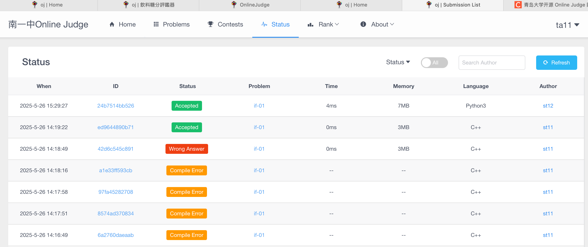
Figure 48: 查看學生作答狀況
8.4. 管理者
8.4.1. 新增使用者(滙入csv檔)
- 1. 編輯使用者資料檔(csv)
格式: id, password, email
sa00, tnfshsa00, sa00@gm.tnfsh.tn.edu.tw ta00, tnfshta00, ta00@gm.tnfsh.tn.edu.tw
- 2. 進入系統管理頁面
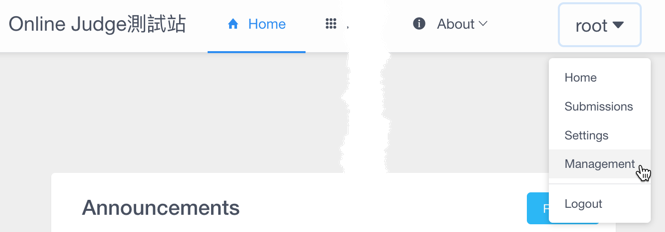
Figure 50: 點選Management
- 3. 點選左側功能表User選項
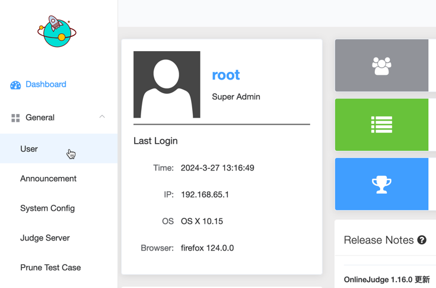
Figure 51: 點選User
- 4. 進入Import User，選擇匯入csv檔
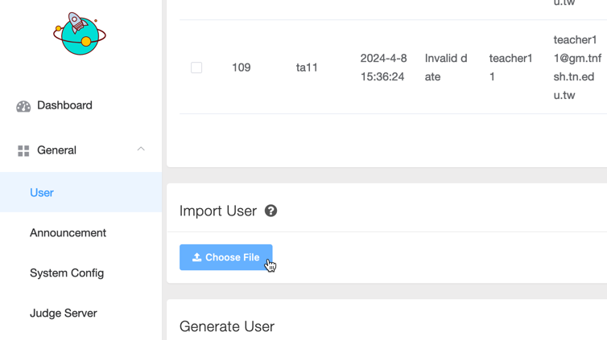
Figure 52: 點選Choose File
- 5. 匯入失敗QQ
原因未知
8.4.2. 新增使用者(系統自動生成)
- 1. 進入系統管理頁面
Figure 53: 點選Management
- 2. 點選左側功能表User選項
Figure 54: 點選User
- 3. 點選Generate User
- 填入前置字串(Prefix)
- 後置字串(Suffix)
- 起始號碼(Start Number)
- 結束號碼(End Number)
- 點選Generate & Export按鈕
- 此時會自動下載一個users.xlsx檔案
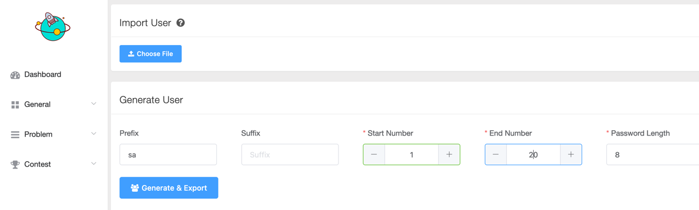
Figure 55: 由系統自動生成使用者帳號
- 填入前置字串(Prefix)
- 4. 開啟使用者列表檔
這個檔案裡有系統為每個使用者生成的密碼，請妥善保存
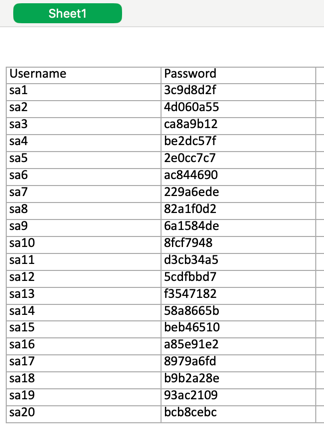
Figure 56: 系統自動生成的使用者
9. 安裝Online Judge Server
9.1. 安裝 Docker
9.1.1. Docker
什麼是Docker?Docker是一個開源的應用程式容器引擎，讓開發者可以將應用程式及其相依的環境打包成一個輕量級的容器，並在任何地方執行。Docker的優點包括：
- 輕量級：Docker容器比虛擬機器更輕量，啟動速度快，佔用資源少。
- 可攜性：Docker容器可以在任何支援Docker的環境中執行，無論是本地開發環境、測試環境還是生產環境。
- 一致性：Docker容器可以確保應用程式在不同環境中的行為一致，避免了「在我電腦上可以運行」的問題。
- 隔離性：Docker容器可以將應用程式及其相依的環境隔離開來，避免了不同應用程式之間的相互影響。
- 擴展性：Docker容器可以輕鬆地擴展和縮減，適應不同的需求。
- 社群支援：Docker擁有活躍的社群和豐富的生態系統，提供了大量的開源映像檔和工具。
- 自動化：Docker可以與CI/CD工具集成，實現自動化部署和測試，提高開發效率。
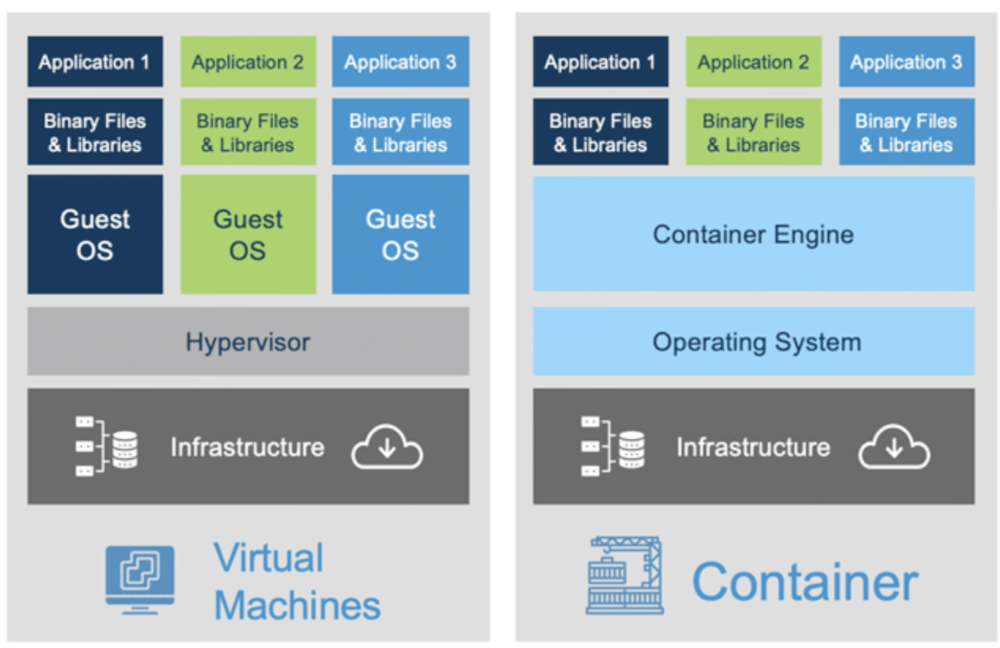
Figure 57: Docker v.s. Virtual Machine
9.1.2. 安裝 Windows Docker Desktop
9.1.3. 下載Docker
9.1.4. 安裝
- check: Use WSL 2 instead of Hyper-V
- check: Add shourtcut to desktop
- close and restart: 重新開機
- 啟動桌面Docker
9.1.5. 除錯
- 出現錯誤
- 以管理者身份開變powershell
輸入以下設定
1: bcdedit /set hypervisorlaunchtype auto 2: dism.exe /online /enable-feature /featurename:Microsoft-Windows-Subsystem-Linux /all /norestart
- 重新開機
9.2. 設定Docker
- 點選Settings / Resources / File sharing
- 選定一個資料夾(例如D:\QD)
- 按+
- 按Apply & restart
9.3. 安裝git
- 下載Git for Windows: https://git-scm.com/download/win
1: winget install --id Git.Git -e --source winget
重新啟動powershell
9.4. 安裝並啟動Online Judge Server
- 以git clone的方式下載QingdaoU/OnlineJudgeDeploy
- 下載後進入OnlineJudgeDeploy資料夾
- 以docker-compose up -d的方式啟動
1: git clone -b 2.0 https://github.com/QingdaoU/OnlineJudgeDeploy.git && cd OnlineJudgeDeploy 2: docker-compose up -d
- 進入http://localhost
- 以管理者身份登入系統(root / rootroot)
9.4.1. QingdaoU Online Judge Server架構
1: version: "3" 2: services: 3: 4: oj-redis: 5: image: redis:4.0-alpine 6: restart: always 7: volumes: 8: - ./data/redis:/data 9: 10: oj-postgres: 11: image: postgres:10-alpine 12: restart: always 13: volumes: 14: - ./data/postgres:/var/lib/postgresql/data 15: environment: 16: - POSTGRES_DB=onlinejudge 17: - POSTGRES_USER=onlinejudge 18: - POSTGRES_PASSWORD=onlinejudge 19: 20: oj-judge: 21: image: registry.cn-hongkong.aliyuncs.com/oj-image/judge:1.6.1 22: restart: always 23: read_only: true 24: cap_drop: 25: - SETPCAP 26: - MKNOD 27: - NET_BIND_SERVICE 28: - SYS_CHROOT 29: - SETFCAP 30: - FSETID 31: tmpfs: 32: - /tmp 33: volumes: 34: - ./data/backend/test_case:/test_case:ro 35: - ./data/judge_server/log:/log 36: - ./data/judge_server/run:/judger 37: environment: 38: - SERVICE_URL=http://oj-judge:8080 39: - BACKEND_URL=http://oj-backend:8000/api/judge_server_heartbeat/ 40: - TOKEN=CHANGE_THIS 41: # - judger_debug=1 42: 43: oj-backend: 44: image: registry.cn-hongkong.aliyuncs.com/oj-image/backend:1.6.1 45: restart: always 46: depends_on: 47: - oj-redis 48: - oj-postgres 49: - oj-judge 50: volumes: 51: - ./data/backend:/data 52: environment: 53: - POSTGRES_DB=onlinejudge 54: - POSTGRES_USER=onlinejudge 55: - POSTGRES_PASSWORD=onlinejudge 56: - JUDGE_SERVER_TOKEN=CHANGE_THIS 57: # - FORCE_HTTPS=1 58: # - STATIC_CDN_HOST=cdn.oj.com 59: #ports: 60: # - "0.0.0.0:80:8000" 61: # - "0.0.0.0:443:1443" 62: 63: oj-nginx: 64: image: nginx:alpine 65: restart: always 66: depends_on: 67: - oj-backend 68: volumes: 69: - ./nginx/nginx.conf:/etc/nginx/nginx.conf:ro 70: - /Users/letranger/Public/oj-certs/server.crt:/etc/ssl/server.crt:ro 71: - /Users/letranger/Public/oj-certs/server.key:/etc/ssl/server.key:ro 72: ports: 73: - "443:443" 74: - "80:80" 75:
可以看到背後分成 4 個 services：Redis、Postgres、judge-server 跟 oj-backend。在 GitHub 的文件上有寫底下一共分成幾個模組9：
- Backend(Django): https://github.com/QingdaoU/OnlineJudge
- Frontend(Vue): https://github.com/QingdaoU/OnlineJudgeFE
- Judger Sandbox(Seccomp): https://github.com/QingdaoU/Judger
- JudgeServer(A wrapper for Judger): https://github.com/QingdaoU/JudgeServer
如果要新增語言，則可以修改：https://github.com/QingdaoU/OnlineJudge/blob/master/judge/languages.py
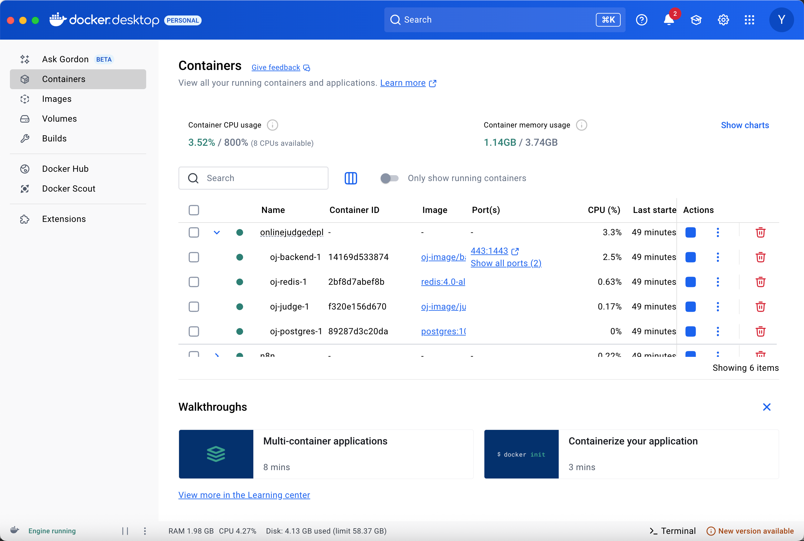
Figure 58: QingdaoU Online Judge Server架構
10. 專題互評系統
- 自動生成rubric
- 線上互評: 同儕互評系統